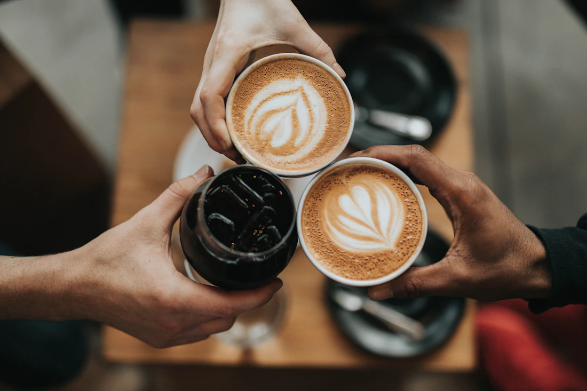
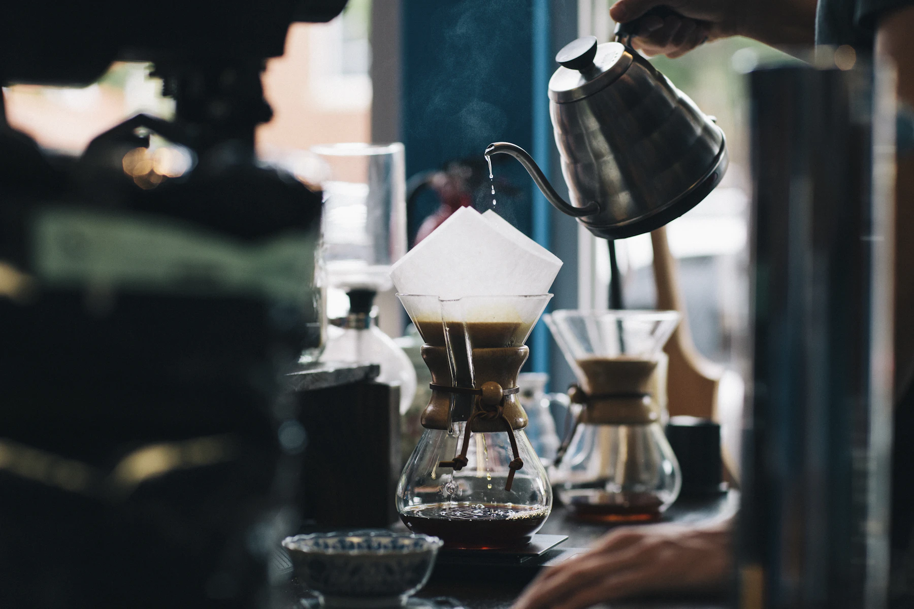
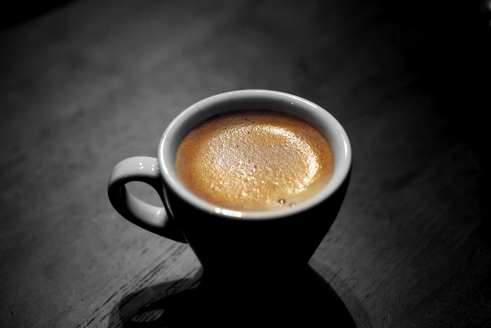
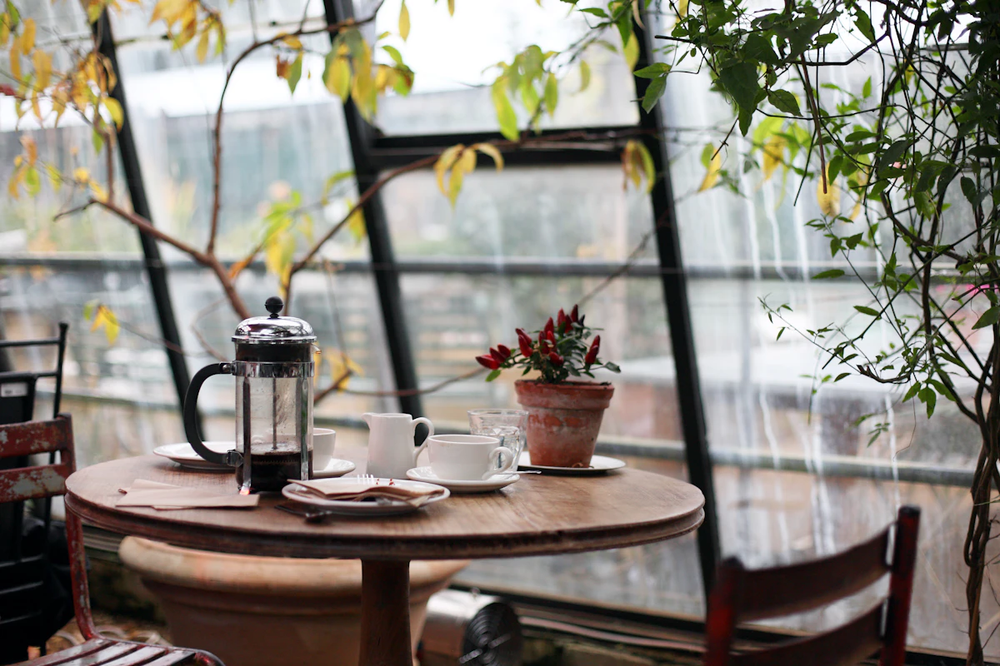

BAR CAFETERÍA EL BOSQUE, CÁDIZ
El Encuentro
Café, barra
y conversación.

en El Bosque.Cómo llegar (Google Maps, nueva pestaña)
Hay nombres que
invitan a quedarse.
El nuestro invita a coincidir.
Somos Bar Cafetería El Encuentro y estamos en El Bosque, Cádiz. Un nombre sencillo para algo también sencillo: encontrarnos alrededor de una conversación.
Nos encontrarás en la calle Diputación, 6. El resto empieza con un «hola».

El café se toma.
La charla
se alarga.
El sonido de una taza sobre el plato. El aroma del café. Esa conversación que encuentra su momento.
Pequeñas escenas que nos inspiran y que hablan el idioma de los bares de siempre.
Lo cotidiano,
con otros ojos.
Una taza, una mesa, un rato por delante.
Una pequeña colección de inspiración cafetera.


Las fotografías de esta web son ilustrativas. No muestran el local, sus instalaciones ni una oferta de productos de El Encuentro.
El punto
de encuentro.
Si estás en El Bosque,
ya estamos un poco más cerca.
BAR CAFETERÍA EL ENCUENTRO
Calle Diputación, 611670 El Bosque, Cádiz, EspañaAbrir en Google Maps (nueva pestaña)La dirección para volver a coincidir.